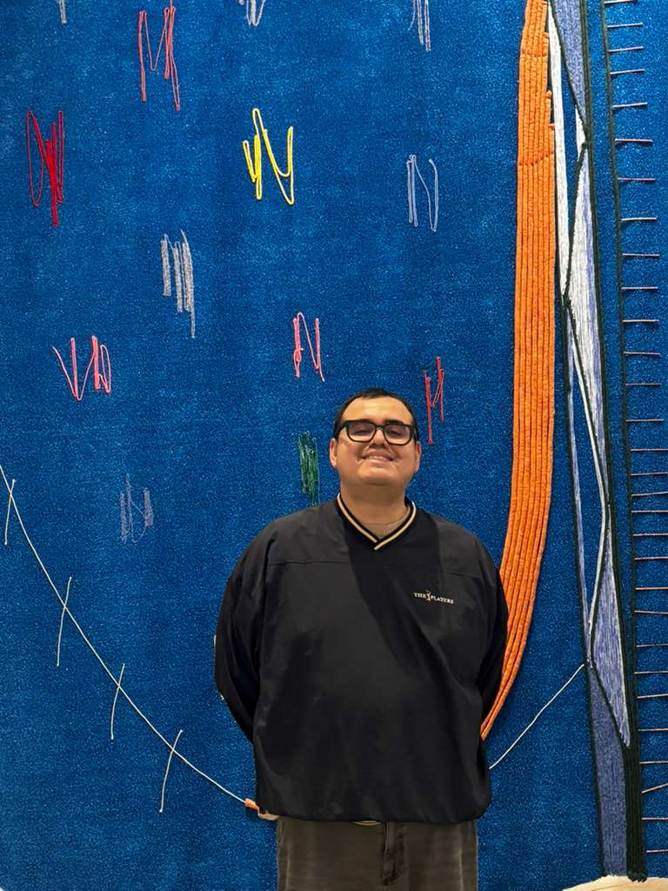

Diego Sebastián Ramírez Ramírez
PhD student in Public Policy
Northeastern University · Boston, MA
I study how constraints — not enough time, not enough information, not enough good options — shape the decisions people make.
Right now that means a lab study on cognitive load and rule-following, a project on youth employment and crime, and early-stage work on childcare and the labor force.
PhD student at Northeastern University, originally from Monterrey, Casanare, Colombia.
Previously: World Bank, IDB, Princeton, and Universidad del Rosario.
Questions I keep returning toDoes a tired mind follow rules more strictly, or less?
Can a summer job at 16 change whether someone is convicted of a violent crime at 30?
What would it take for childcare to stop being a labor-market constraint?
Where do feminist and queer perspectives change the economic story being told?
Education
Ph.D. in Public Policy
Northeastern University
M.S. in Applied Quantitative Methods & Social Analysis
Northeastern University
M.Sc. in Economics
Universidad del Rosario
B.A. in Psychology
Universidad Nacional de Colombia